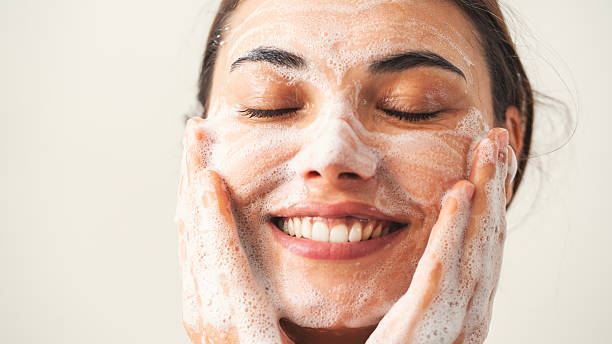
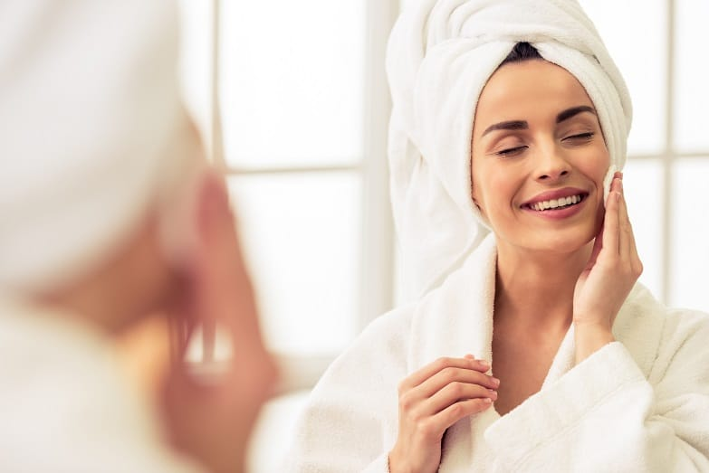
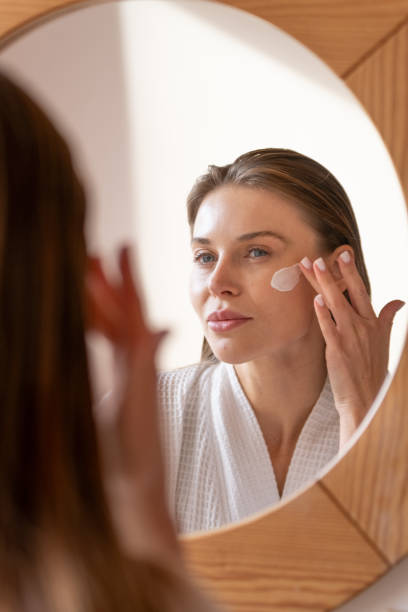
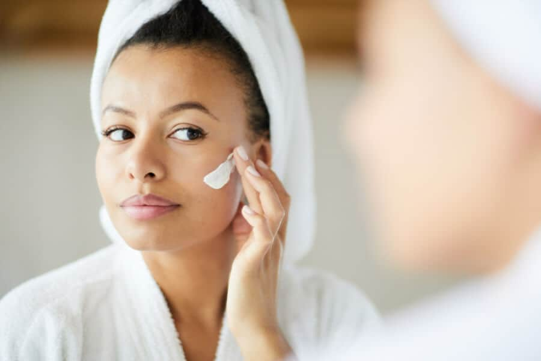

Quatro passos básicos: Bons cuidados com a pele envolvem quatro passos básicos: limpar, tonificar, tratar e proteger.

A limpeza é o primeiro passo para cuidados eficazes com a pele. A limpeza remove a sujeira, suor, oleosidade e maquiagem, preparando a pele para os cuidados. A pele limpa absorve melhor os ingredientes ativos em produtos dermatológicos.

A tonificação remove traços da loção de limpeza, refresca a pele e restaura o seu pH natural.

Produtos para o tratamento da pele hidratam e recompõem a pele. Muitos também tratam problemas específicos de pele.

A proteção solar é importante para aqueles dias em que a sua pele é exposta aos raios UV nocivos. Eles são a principal causa do envelhecimento prematuro da pele.
Para potencializar os resultados da sua rotina diária de cuidados com a pele, a L'Oréal Paris desenvolveu produtos formulados com ativos dermatológicos de alta eficácia. Selecionamos os itens essenciais para complementar cada etapa do seu tratamento facial, garantindo uma pele profundamente hidratada, protegida e renovada. Confira abaixo algumas das nossas melhores recomendações especialmente para você.

Gel de limpeza facial preenchedor com Ácido Hialurônico. Limpa purificando a pele sem ressecar e reduz a oleosidade excessiva.

Sérum anti-idade concentrado com 1,5% de Ácido Hialurônico. Preenche as linhas de expressão e hidrata profundamente a pele.

Protetor solar diário com efeito toque seco e Ácido Hialurônico. Protege contra os raios UV e previne o envelhecimento precoce.